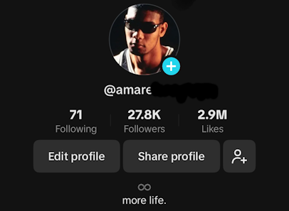

HOBBIES PAGE
Content Creation
One thing I have always been interested in is content creation. One year ago, I decided to post on Tiktok.
Creating videos is something that I have been doing for years. Learning the different effects from music videos first piqued my interest.
Eventually, I decided to start my own page. My content is mainly sports videos using some of my favorite songs ever.
Vinyls

Music has had a huge impact on my life. It's what also helped inspire me to post on Tiktok.
About two years ago, videos would come across my page with people showing off vinyls they recently purchased.
I took interest in the videos as it showed the different music tastes that everyone has. That's when I started collecting myself.
I own roughly about 40 different vinyl records, and I spin one almost every day.
Video Mix
This is one of my mixes that I created. The song is called "Crack Rock" by Frank Ocean. The player is Kobe Bryant.